1
Vliegeren
🎯 1977AI: GO
Golvend donker pannendak met mos-randen + schoorsteen — upsell-kans.
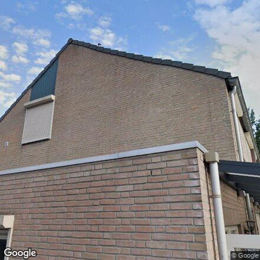
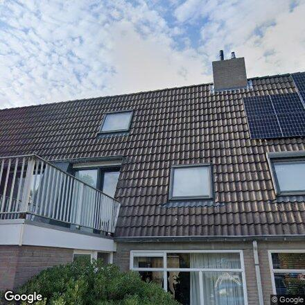
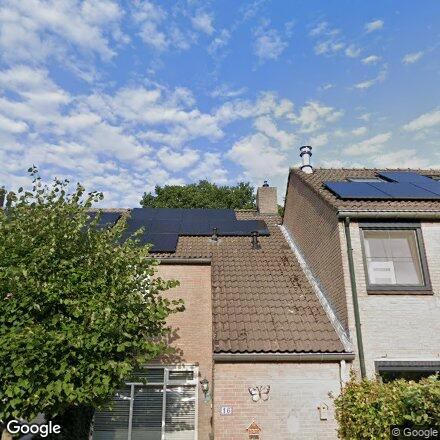
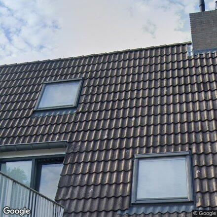
nok-zoom (midden)
2
Haasje over
🎯 1977AI: TWIJFEL
Kopgevel achter boom — dak beperkt zichtbaar.
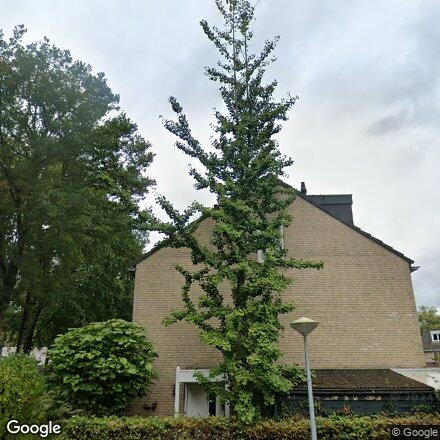
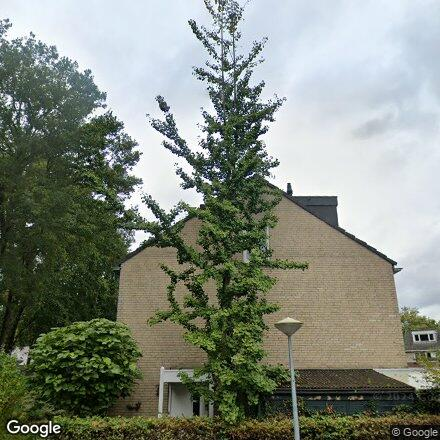

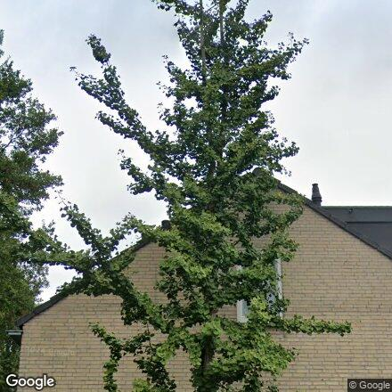
nok-zoom (midden)
3
Schuilevinkje
🎯 1977AI: GO
Rij jaren 50-60, donkere pannen + schoorsteen — origineel.
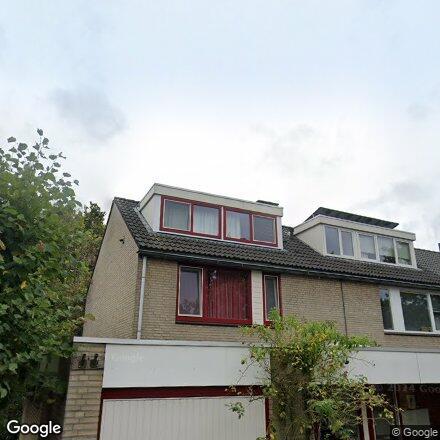
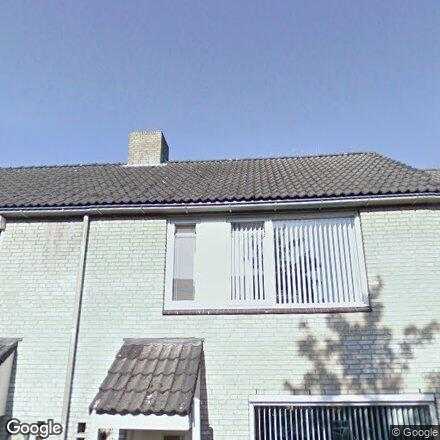
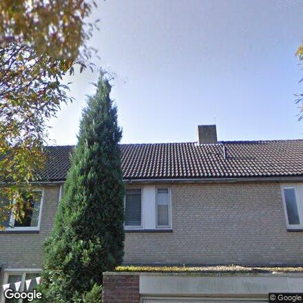
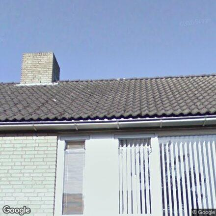
nok-zoom (midden)
4
Krijgertje
🎯 1977AI: GO
Rijen jaren 75-85, donkere originele pannen + dakkapellen.
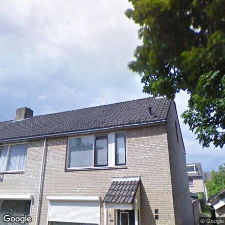
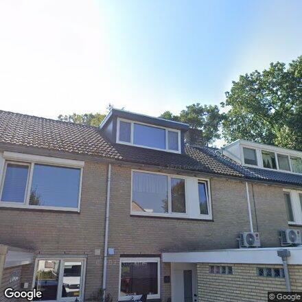
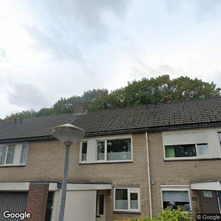
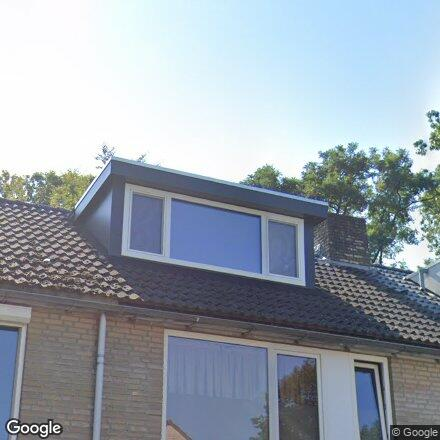
nok-zoom (midden)
5
Steltlopen
🎯 1977AI: TWIJFEL
Dak grotendeels vol panelen; pannen eronder ogen origineel.
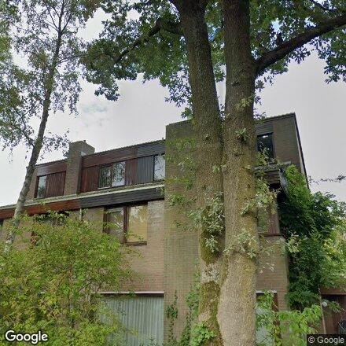
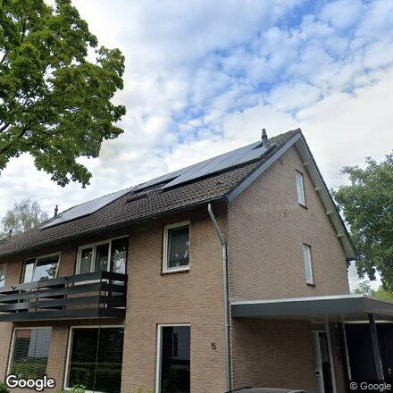
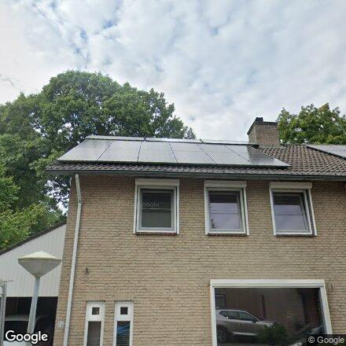
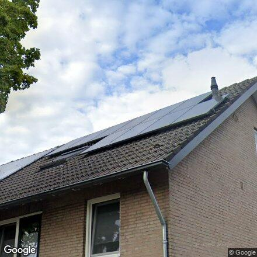
nok-zoom (midden)
6
Jagerbal
🎯 1977AI: TWIJFEL
Grote moderne dakkapel-opbouw — dak deels verbouwd.
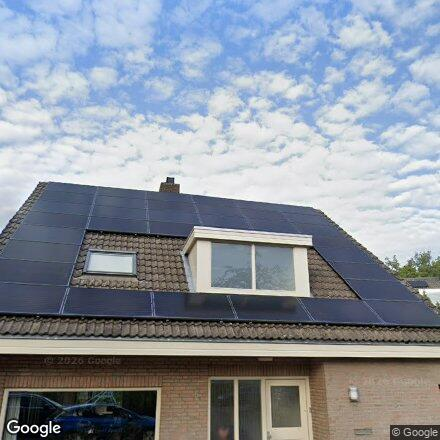
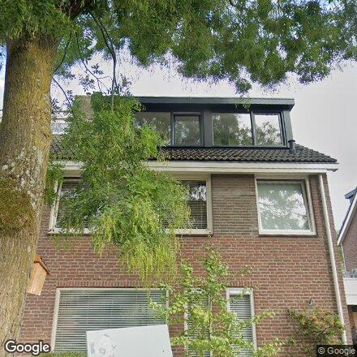
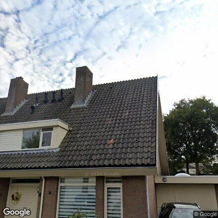
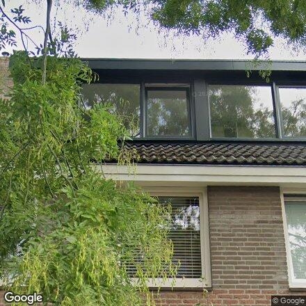
nok-zoom (midden)
7
Hinkelbrits
🎯 1977AI: GO
Ouder vrijstaand pand, donkere pannen + schoorsteen — origineel.
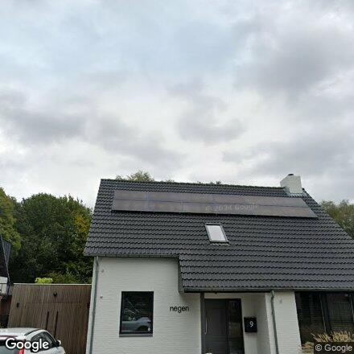
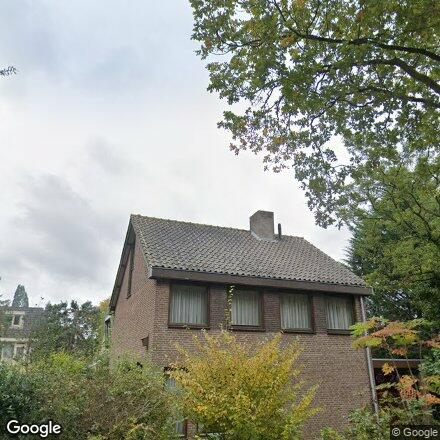
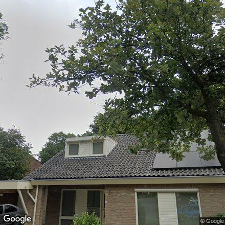
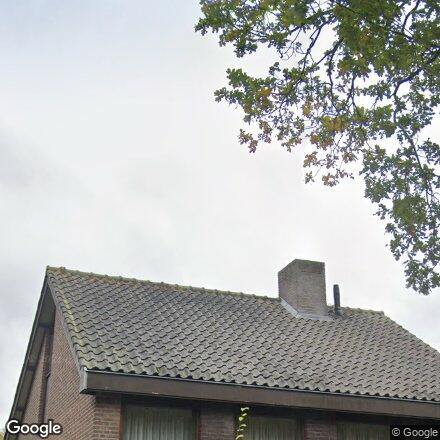
nok-zoom (midden)
8
Diabolo
🎯 1977AI: GO
Groot donker golvend pannendak + schoorsteen — origineel jaren 75-85.
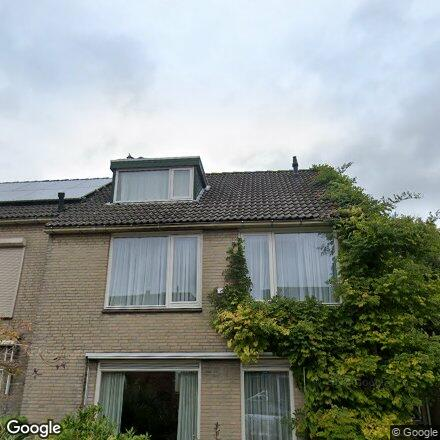
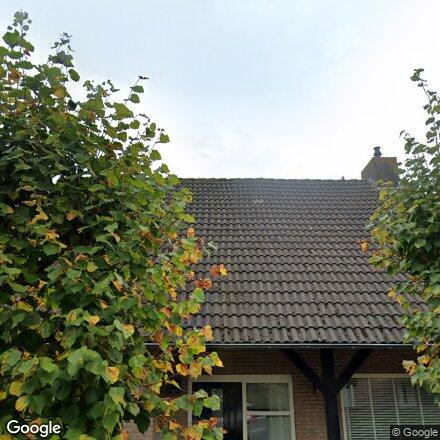
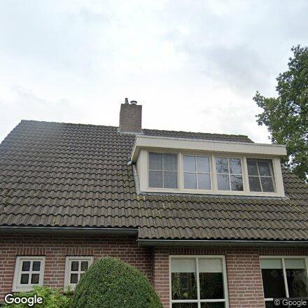
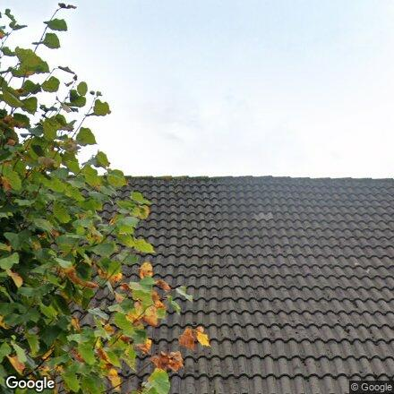
nok-zoom (midden)
9
Klepperen
🎯 1977AI: TWIJFEL
Kopgevel — dak niet zichtbaar.
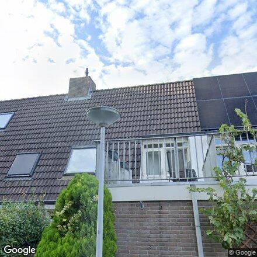
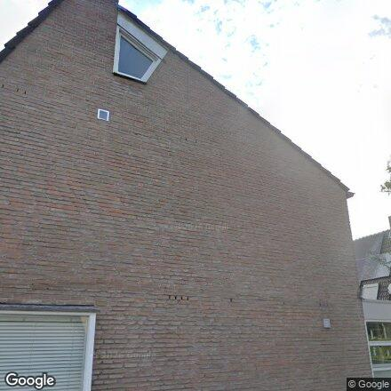
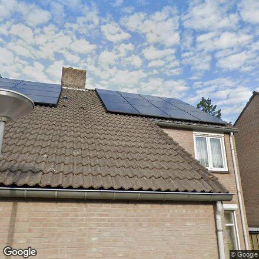
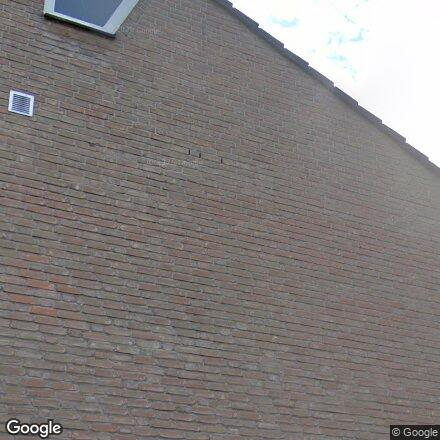
nok-zoom (midden)
10
Haktol
🎯 1977AI: TWIJFEL
Rijen met dakkapel-laag + panelen, flauwere kap.
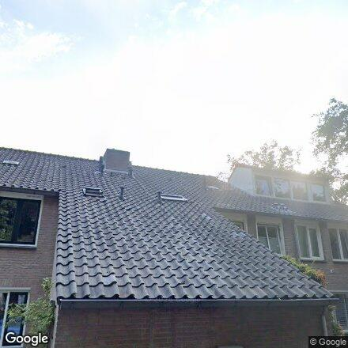
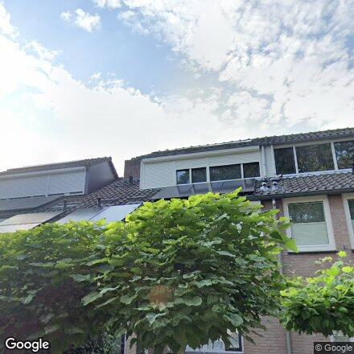
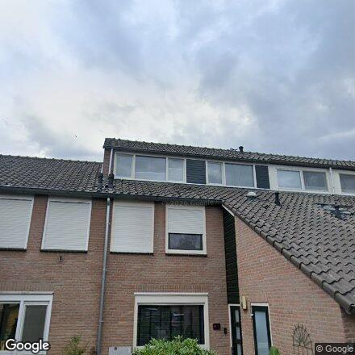
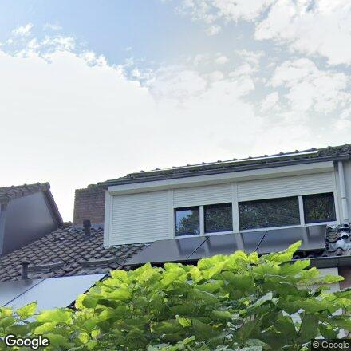
nok-zoom (midden)
11
Zevensprong
🎯 1977AI: GO
Donkere originele pannen + dakkapel-opbouw, jaren 75-85.
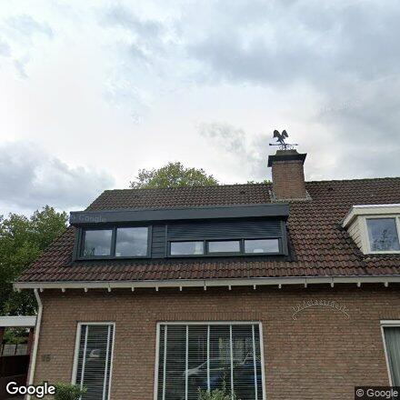
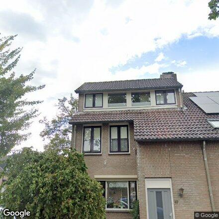
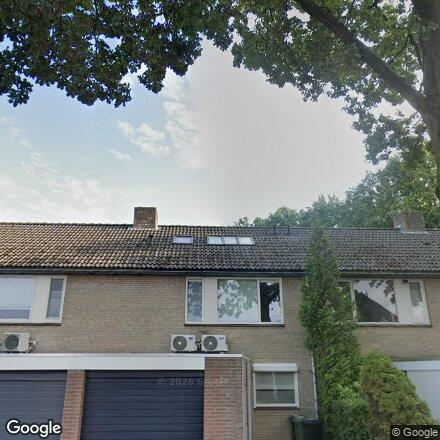
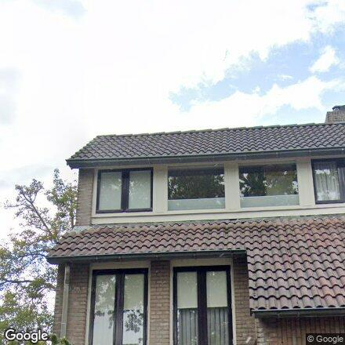
nok-zoom (midden)
12
Klabots
🎯 1979AI: GO
Donkere originele pannen + schoorsteen (panelen — geen probleem).
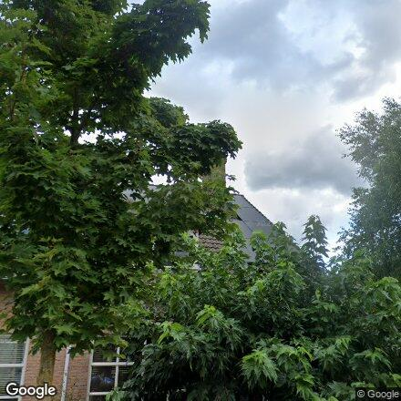
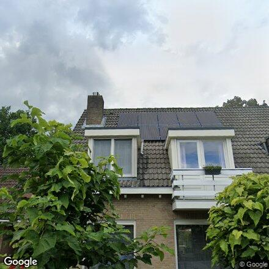
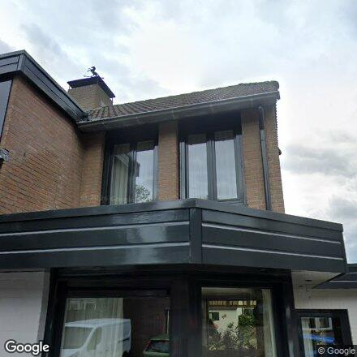
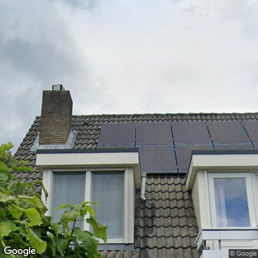
nok-zoom (midden)
13
Pintol
🎯 1977AI: GO
Groot doorlopend origineel pannendak + schoorsteen.
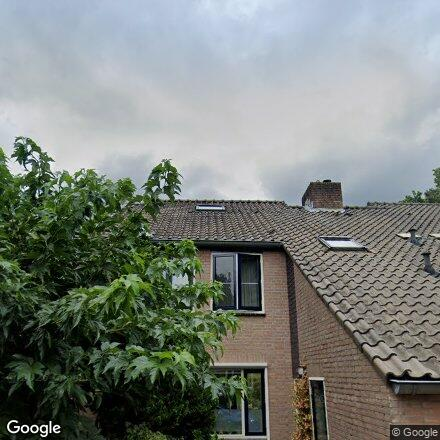
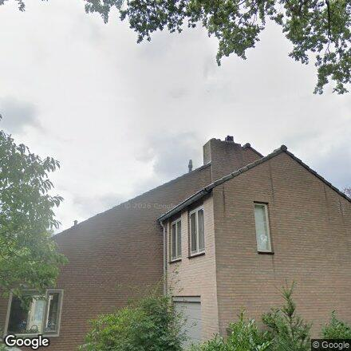
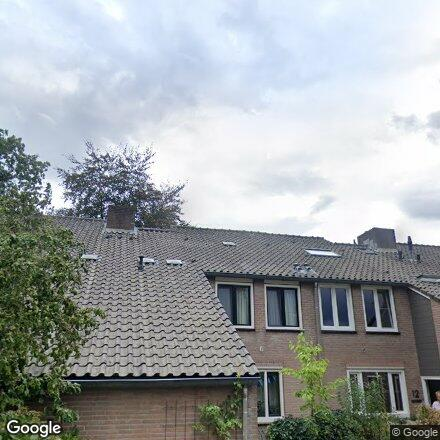
nok-zoom (midden)
14
Hoepel
🎯 1977AI: GO
2-kap, donkere originele pannen + schoorsteen, jaren 75-85.
nok-zoom (midden)
15
Pinkelbergen
🎯 1977AI: GO
Donkere originele pannen + schoorsteen, jaren 75-85.
nok-zoom (midden)
16
Boksprong
🎯 1977AI: TWIJFEL
Kopgevel, asymmetrische kap — dak beperkt zichtbaar.
nok-zoom (midden)
17
Lijntjemeet
🎯 1977AI: GO
Donkere originele pannen + dakkapel, jaren 75-85.
nok-zoom (midden)